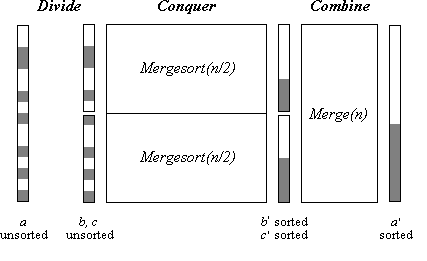
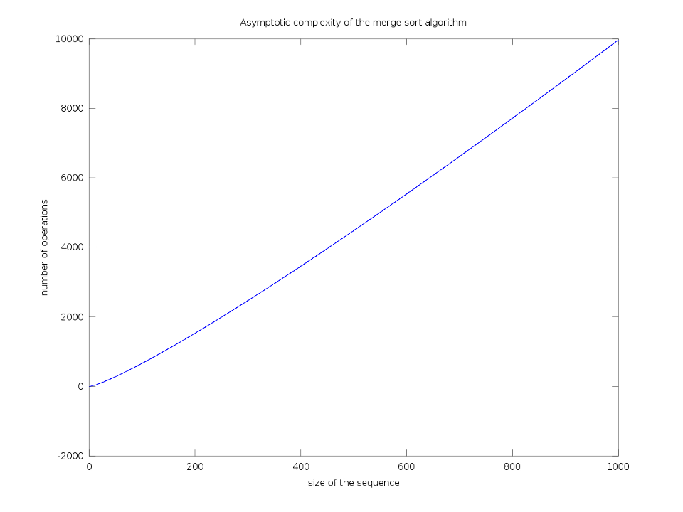

Le principe de cet algorithme est très simple. Il consiste à fusionner deux sous-séquences triées en une séquence triée.
Il exploite directement le principe du divide-and-conquer qui repose, grosso-modo, en la division d'un problème en ses sous problèmes et en des recombinaisons bien choisies des sous-solutions optimales.
Le principe de cet algorithme tend à adopter une formulation récursive :
On découpe les données à trier en deux parties plus ou moins égales
On trie les 2 sous-parties ainsi déterminées
On fusionne les deux sous-parties pour retrouver les données de départ
Donc chaque instance de la récursion va faire appel à nouveau au programme, mais avec une séquence de taille inférieure à trier.
La terminaison de la récursion est garantie, car les découpages seront tels qu'on aboutira à des sous-parties d'un seul élément; le tri devient alors trivial. Une fois les éléments triés indépendamment les uns des autres, on va fusionner (merge) les sous-séquences ensemble jusqu'à obtenir la séquence de départ, triée.
La fusion consiste en des comparaisons successives. Des 2 sous-séquences à fusionner, un seul élément peut-être origine de la nouvelle séquence. La détermination de cet élément s'effectue suivant l'ordre du tri à adopter.
Une fois que l'ordre est choisi, on peut trouver le chiffre à ajouter à la nouvelle séquence; il est alors retiré de la sous-séquence à laquelle il appartenait. Cette opération est répétée jusqu'à ce que les 2 sous-séquences soient vides.
Voici un petit schéma qui illustre ces concepts

Divide and conquer
Rassurez-vous si ces notions vous paraissent un peu abstraites, un exemple vaut mieux qu'un long discours !
Exemple
Supposons qu'on ait à trier la séquence suivante :
[11,4,27,17,32,5,12]
par ordre croissant.
Opération de découpage
Cette partie est très simple, elle va consister à découper notre séquence en des sous-séquences de taille presque égales (si le nombre d'éléments de la séquence est impair, on ne saurait pas avoir des tailles rigoureusement égales).
Une fois les découpages effectués, après un certain nombre d'instances, on va avoir des sous-séquences d'un seul élément, comme ceci
[11] [4] [27] [17] [32] [5] [12]
Bien évidemment, de telles sous-séquences sont triées, vu qu'il n'y a qu'un seul élément. Le but va maintenant être de fusionner correctement ces listes, chacune triée, entre elles.
Opération de fusion
On va fusionner les listes 2 à 2, ce qui va nous donner 4 sous-listes
[4,11] [17,27] [5,32] [12]
On continue le processus jusqu'à ce que la liste de départ soit triée. On obtient ainsi
[4,5,11,12,17,27,32]
qui constitue bien un tri de la séquence de départ.
Voici maintenant une illustration des étapes de l'algorithme avec d'autres données
Comme vous l'avez remarqué, nous allons implémenter cet algorithme de façon récursive. Il existe également une version itérative qui se construit de façon plus ou moins semblable.
L'implémentation de cet algorithme repose essentiellement en 3 fonctions :
insert
merge
mergeSort
dont les rôles et les implémentations sont détaillés ci-dessous.
Insert
La première fonction insère un élément quelconque dans une liste triée par ordre croissant. Si la séquence dans laquelle on doit insérer l'élément est vide, on se contente de l'ajouter à la séquence et on la retourne. Dans le cas contraire, on va comparer l'élément à insérer avec le tout premier élément de la séquence.
Si l'élément à insérer est plus petit (l'ordre croissant est alors respecté) on l'insère en première position et on retourne la nouvelle séquence. Si ce n'est pas le cas, on appelle récursivement la fonction insert en lui passant comme argument l'élément à insérer et la séquence, en ayant pris soin de ne pas considérer le premier élément.
La terminaison de la récursion est garantie, puisqu'à chaque instance, la taille de la séquence décroît d'une unité.
Ces considérations mènent à la fonction suivante :
# La fonction insert prend l'élément à insérer et une séquence triée en tant qu'arguments.
# Elle insère l'élement à la place correcte dans la séquence et retourne cette-dernière.
def insert(element, sequence):
if sequence==[]:
return [element]
elif element<=sequence[0]:
return [element] + sequence
else:
return [sequence[0]] + insert(element, sequence[1:len(sequence)])
C'est tout en ce qui concerne cette fonction.
Merge
Comment implémenter la fonction de fusion, clé de voûte de notre algorithme ?
On va d'abord vérifier qu'aucune des sous-séquences n'est vide; si c'est le cas, on retournera l'autre sous-séquence : il n'y a alors rien à fusionner (cas trivial). On va ensuite fusionner les 2 sous-séquences. Le principe sera d'extraire le premier élément de la première sous-séquence et de l'insérer dans la seconde, au moyen de la fonction insert.
Concrètement, on appellera récursivement la fonction merge en donnant comme argument la première sous-séquence, sans considérer son premier élément, et la séquence résultante de l'insertion du premier élément de la première sous-séquence dans la seconde, en tant que second argument.
Cela nous mène à la fonction suivante
# La fonction merge prend 2 séquences triées comme arguments.
# Elle retourne une fusion des 2 séquences telles que la séquence résultante est triée.
def merge(subSequence1,subSequence2):
if subSequence1==[]:
return subSequence2
elif subSequence2==[]:
return subSequence1
else:
return merge(subSequence1[1:len(subSequence1)],insert(subSequence1[0], subSequence2))
La terminaison de la récursion est également garantie, puisque à chaque instance de récursion, la taille d'une des deux sous-séquences décroît d'une unité. On finira irrémédiablement par se retrouver dans un des ces 2 cas triviaux, à savoir, une séquence vide.
C'est tout en ce qui concerne cette fonction, passons à la dernière des 3 !
MergeSort
Celle-ci est probablement la plus simple des 3, pour peu que vous ayez compris les 2 autres. On vérifier si la séquence fournie en entrée n'est pas vide ou ne se résume pas un seul élément, auquel cas, il n'y a rien à faire ! Si les tests sont concluants, on lancera la fonction de fusion sur 2 sous séquences récursives du tableau.
On a enfin la fonction suivante
# La fonction mergeSort prend la séquence à trier comme argument. La séquence d'entrée est supposée être une liste.
# Cette fonction retourne une permutation de la séquence d'entrée, triée par ordre croissant.
def mergeSort(sequence):
if len(sequence)==0 or len(sequence)==1:
return sequence
else:
return merge(mergeSort(sequence[0:n/2]),mergeSort(sequence[n/2+1:n]))
La terminaison de la récursion est encore une fois garantie, puisque la taille des deux sous-séquences décroît à chaque instance de récursion. On finira par aboutir au cas trivial, marquant la fin de la récursion.
Il suffit de combiner ces 3 fonctions pour avoir notre algorithme au complet, algorithme que voici
# La fonction insert prend l'élément à insérer et une séquence triée en tant qu'arguments.
# Elle insère l'élement à la place correcte dans la séquence et retourne cette-dernière.
def insert(element, sequence):
if sequence==[]:
return [element]
elif element<=sequence[0]:
return [element] + sequence
else:
return [sequence[0]] + insert(element, sequence[1:len(sequence)])
# La fonction merge prend 2 séquences triées comme arguments.
# Elle retourne une fusion des 2 séquences telles que la séquence résultante est triée.
def merge(subSequence1,subSequence2):
if subSequence1==[]:
return subSequence2
elif subSequence2==[]:
return subSequence1
else:
return merge(subSequence1[1:len(subSequence1)],insert(subSequence1[0], subSequence2))
# La fonction mergeSort prend la séquence à trier comme argument. La séquence d'entrée est supposée être une liste.
# Cette fonction retourne une permutation de la séquence d'entrée, triée par ordre croissant.
def mergeSort(sequence):
if len(sequence)==0 or len(sequence)==1:
return sequence
else:
return merge(mergeSort(sequence[0:n/2]),mergeSort(sequence[n/2+1:n]))
On va maintenant analyser la complexité de notre algorithme. Nous n'avons a priori aucune idée de la façon dont sont implémentées les instructions basiques de Python, mais nous ne nous trompons pas en supposant que la plupart sont implémentées en temps constant, i.e. leur complexité asymptotique est \mathcal{O}(1).
Il va donc s'agir de compter le nombre d'instances, peu importe le nombre d'instructions basiques par instance, ce nombre est absorbé par la constante inhérente à la définition du "Big-Oh".
On remarque que la division en sous-séquences de tailles quasiment égales ou égales est d'une complexité \mathcal{O}(\log_{2}n).
En effet, à chaque instance, la taille d'une séquence est divisée par 2, si bien que si à l'instance i, la séquence contient toujours plus d'un élément, elle est d'une taille : \frac{\mbox{taille de la s\'equence initiale}}{2^{i}}, ce qui correspond à l'expression d'un logarithme, en base 2 dans ce cas.
On doit maintenant regarder comment se comporte notre fonction qui permet de fusionner 2 séquences. La fonction merge est de complexité linéaire, elle dépend linéairement du nombre d'éléments en entrée. Cette fonction est donc \mathcal{O}(n).
Dans le pire des cas, la fonction insert est elle aussi de complexité linéaire. En effet, le pire des cas est celui qui correspond à un élément à insérer tout à la fin de la séquence. Tous les éléments de la séquences seraient alors comparés avec l'élément à insérer, ce qui nous donne un temps d'exécution linéaire. Ici aussi, la complexité de la fonction est \mathcal{O}(n).
En conclusion, les 2 fonctions insert et merge sont exécutées exactement \log_{2} n fois, étant donné qu'elles sont appelées à chaque instance de la fonction mergeSort.
On pourrait s'attendre à une complexité de l'ordre de 2n imes \log_{2} n, mais il n'en est rien. Ce serait oublier la fameuse constante du "Big-Oh".
La complexité de notre algorithme est donc \mathcal{O}(n\log n). La base du logarithme est omise, c'est également une conséquence de la définition de la complexité asymptotique.
Graphiquement, notre complexité s'illustre par

Complexité asymptotique de l'algorithme du tri fusion
Stabilité
On définit la stabilité d'un algorithme de tri par son caractère à maintenir l'ordre de quantités égales pour la relation d'ordre proposée. Lorsque deux éléments ont une même clé, l'ordre dans lequel ils étaient avant le tri doit être le même que celui après. Le point crucial pour la stabilité semble être la partie de fusion, étant donné qu'à aucun autre moment l'ordre relatif des éléments de la séquence n'est modifié.
Voyons donc avec un simple exemple ce qu'il se passe. Considérons la séquence [3_{1},1,-8,3_{2},5] à trier.
Quand on va fusionner les sous séquences, on aura d'abord : [1,3_{1}] [-8,3_{2}] [5]
On aura ensuite : [1,3_{1}] [-8,3_{2},5] puis finalement [-8,1,3_{1},3_{2},5]
On constate que l'ordre des quantités égales n'a pas été bouleversé : l'algorithme est donc stable.
Voila, le cours est terminé.
Vous êtes capables dès à présent d'implémenter le merge sort et de trier des listes.
Pour toute remarque, vous pouvez m'envoyer un MP !